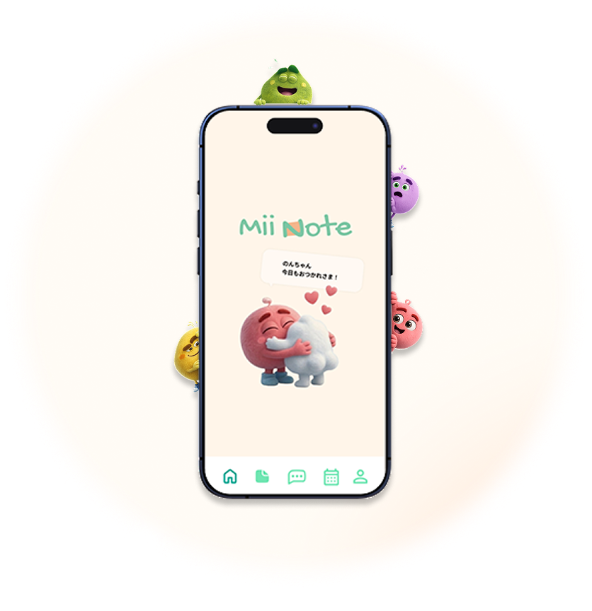
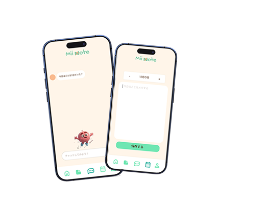
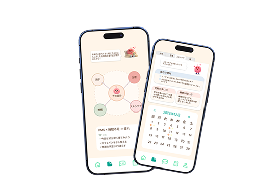
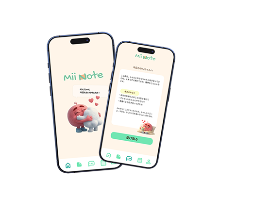

モヤモヤして
気持ちがまとまらない
何に悩んでいるのかも分からないまま、 気持ちだけがぐるぐるしてしまう

気持ちを「書く・気づく・理解する」ことで、少しずつ軽くしていけます。
何に悩んでいるのかも分からないまま、 気持ちだけがぐるぐるしてしまう
気持ちを書き出しても、結局どう感じているのか 整理できない。
本音を話せる場所がなくて、 ひとりで抱え込んでしまう。

1
うまく言葉にできなくても大丈夫。
思ったことを、ありのまま残してみよう。

2
気分の変化だけでなく、使った基礎化粧品や体調が 手軽に振り返ることができて、生活との関係も ひとつにつながって見えてきます。

3
無理に変わらなくていい。
少しずつ、自分にやさしくなれる。
今日の気持ち、
少しだけ書いてみませんか？
Akaneさん（20代）
"書くだけでいいって思えたら気持ちが少し楽になりました。"
Mameさん（40代）
"自分の気持ちってこんなふうに変わってたんだって、初めて気づけました。"
Miwaさん（30代）
"キャラクターがいるだけで、ひとりじゃないって思えました。"
記録した内容は外に公開されることはなく、
自分だけの空間で安心して使えます。
相棒がそっと寄り添いながら、あなたの気持ちを
受け止めてくれる場所です。
毎日続けなくても大丈夫。
あなたのペースで無理なく続けられます。
基本的な記録や振り返りは無料でご利用いただけます。 もっと深く自分を知りたい方のために、プレミアム機能もご用意しています。
いいえ。記録した内容が外に公開されることはなく、 自分だけの空間で安心して使えます。
毎日続けなくても大丈夫です。 あなたのペースで、無理なく続けられることを大切にしています。
気持ちを整理したい方、自分の状態をやさしく振り返りたい方、 ひとりで抱え込みがちな方におすすめです。
より深い振り返りや分析、相棒からのフィードバックなど、 自分と向き合う時間をもっと支える機能が使えます。